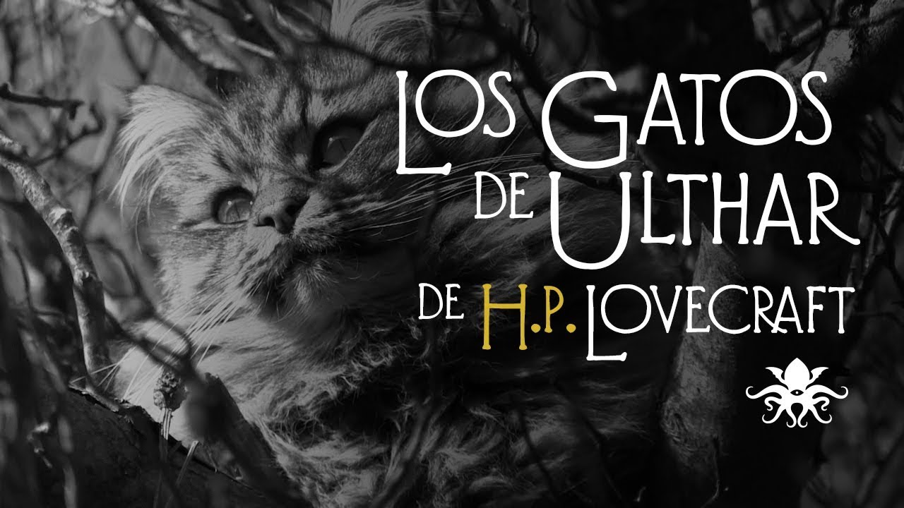
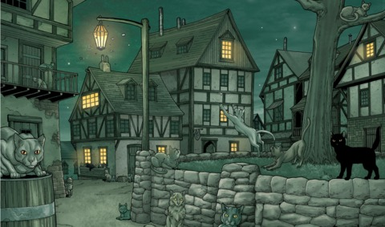
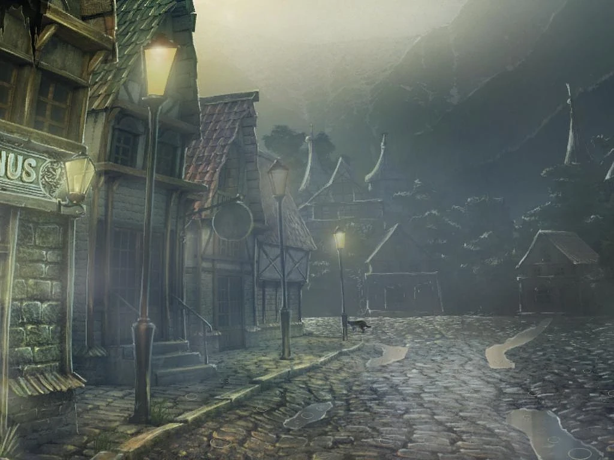
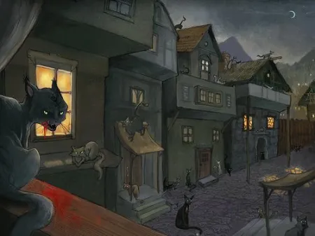
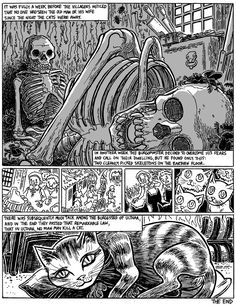

En una ciudad llamada "Ulthar" cercana al rio "Skai" viven dos ancianos, los cuales disfrutan matando gatos.

Un día llegó a la ciudad una familia de vagabundos a la ciudad, tenían un hijo que tenía un gato negro.
Posteriormente el gato desapareció, la familia no paró de buscarlo, varios habitants les contó la historia de los ancianos.
A las horas todos los gatos de la ciudad desaparecieron, entonces el niño hizo una plegaria a un Dios para que volviese su gato.

Al poco tiempo volvió su gato a donde ellos estaban y también volvieron otros gatos.

Los habitantes extrañados fueron a ver a los ancianos y se encontraron dos esqueletos.

| |
|
| |
|